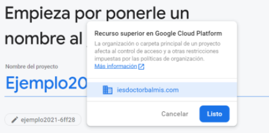
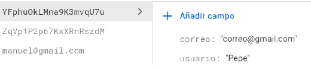
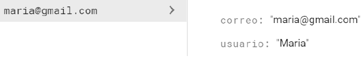

Apuntes
Descargar estos apuntes en pdf y html
Tema 11.3. Persistencia de Datos III Firebase
Índice
Acceso a Base de Datos con FIREBASE
Firebase es una plataforma de backend para construir aplicaciones móviles y web, se encarga del manejo de la infraestructura permitiendo que el desarrollador se enfoque en otros aspectos de la aplicación. Entre sus características se incluye base de datos de tiempo real, autenticación de usuarios y almacenamiento (hosting) estático. La idea de usar Firebase es no tener que escribir código del lado del servidor y aprovechar al máximo las características que nos provee la plataforma. Para utilizar Firebase con Android disponemos de un SDK, lo que nos permitirá integrarlo fácilmente a nuestra aplicación. Para este ejemplo vamos a construir un listado de cosas por hacer usando la base de datos de tiempo real de Firebase como backend y autenticación con email/password.
Creando un app de Firebase
El primer paso es asociar nuestra cuenta de Firebase a una de nuestras cuentas de correo electrónico:
Una vez está lista veremos la pantalla donde es posible visualizar nuestros proyectos o crear nuevos.
| Para crear un nuevo proyecto solamente tendremos que introducir un nombre y la organización o carpeta principal del proyecto. Google nos pedirá si queremos habilitar Google Analytics en el proyecto, lo dejaremos habilitado. |

|
Y lo asociaremos a la cuenta por defecto. Una vez realizados estos pasos, se creará el proyecto de firebase.
Posteriormente nos aparecerá la pantalla que nos permitirá añadir la aplicación a nuestro proyecto Cada proyecto estará asociado a una o más aplicaciones, por lo que antes de crear el proyecto necesitaremos crear la aplicación o decidir el espacio de nombres de esta.
Vamos a crear una aplicación sencilla con el siguiente aspecto, que nos permita entender el funcionamiento de acceso a Firebase para enviar y recibir datos sin autentificación.
Cuando el usuario meta la información en los TextView y pulse el botón añadir, la información se guarda en Firebase y cuando se modifique esta desde Firebase, se mostrará un mensaje con el texto modificado en el Txt de la aplicación.
Una vez tengamos el espacio de nombre, podremos seguir con los pasos que nos pide Firebase para crear la aplicación. En nuestro caso no será necesario introducir la firma de certificación.
Justo en el momento que termina de crearse la aplicación, se descargara un archivo JSON que deberemos copiar en nuestro proyecto Android. Solo tendremos que seguir las instrucciones que proporciona muy claramente la página Web de Firebase (copiar el archivo y añadir las líneas que indican que vamos a usar servicios de google en los build.gradle de la app y del proyecto).
-
En el proyecto
dependencies { classpath "com.android.tools.build:gradle:7.0.3" classpath "com.google.gms:google-services:4.3.10" //añadir esta línea ... }
-
En la APP
plugins { id 'com.android.application' id 'kotlin-android' id 'com.google.gms.google-services' // Google Services plugin } dependencies { ... implementation 'androidx.appcompat:appcompat:1.3.1' //añadir las siguientes dos líneas implementation platform('com.google.firebase:firebase-bom:28.4.1') implementation 'com.google.firebase:firebase-analytics' ... }
La dependencia de firebase bom permitirá evitar añadir la versión al resto de dependencias de Firebase que incluyamos en nuestro proyecto, facilitando mucho el trabajo.
Muy importante no olvidar añadir en el SDK, el servicio de Google Play
En el modo consola podremos acceder a todos nuestros proyectos, y podemos comprobar la aplicación o aplicaciones añadidas sobre un proyecto (podemos añadir más de una).
Todas las aplicaciones por defecto se encuentran en modo desarrollo y bajo el plan gratis que soporta hasta 100 conexiones concurrentes, 1GB de almacenamiento y 10GB de transferencia en el backend. Luego de creada el app nos dirigimos a ver sus detalles, podemos entrar en diversas pestañas que nos permitirán trabajar con la APP, pero a nosotros nos interesa la BD. Firebase ofrece dos soluciones de bases de datos en la nube y accesibles para los clientes que admiten sincronización en tiempo real:
-
Firestore DataBaseen ocasiones también nombrada Cloud Firestores, es la base de datos más reciente de Firebase. Aprovecha lo mejor de Realtime Database con un modelo de datos nuevo, permite consultas más ricas y rápidas, y el escalamiento se ajusta a un nivel más alto que Realtime Database. -
Realtime Databasees la base de datos original de Firebase. Es una solución eficiente y de baja latencia destinada a las apps para dispositivos móviles que necesitan estados sincronizados entre los clientes en tiempo real. Es similar a la anterior en su uso, por lo que no la explicaremos.
Firestore DataBase
Base de datos NoSQL flexible, escalable y en la nube a fin de almacenar y sincronizar datos para la programación en el lado del cliente y del servidor. Al igual que Firebase Realtime Database mantiene los datos sincronizados entre apps cliente a través de agentes de escucha en tiempo real. El modelo de datos de Firebase Firestore DataBase admite estructuras de datos flexibles y jerárquicas.
Almacena los datos en documentos organizados en colecciones, los documentos pueden contener objetos anidados complejos, además de subcolecciones. Está optimizada para almacenar grandes colecciones de documentos pequeños. El modelo de datos está formado por documentos, cada documento contiene un conjunto de pares clave-valor. Todos los documentos se deben almacenar en colecciones, los documentos pueden contener subcolecciones y objetos anidados, y ambos pueden incluir campos primitivos como strings o tipos de objetos complejos como listas. Las colecciones y los documentos se crean de manera implícita en Firestore DataBase. Solo debes asignar datos a un documento dentro de una colección. Si la colección o el documento no existen, Firestore DataBase los crea. Cada documento está identificado por una clave única, que puede generarse automáticamente o que se puede añadir a la vez que el documento:

Son muy similares a JSON, de hecho, básicamente son JSON. Existen algunas diferencias, por ejemplo: los documentos admiten tipos de datos adicionales y su tamaño se limita a 1 MB, pero en general, puedes tratar los documentos como registros JSON livianos. Los documentos viven en colecciones, que simplemente son contenedores de documentos. Por ejemplo, podrías tener una colección llamada users con los distintos usuarios de tu app, en la que haya un documento que represente a cada uno:
Usando el ejercicio del que hemos creado el layout de inicio, vamos a añadir el código necesario para que nos permita interactuar con Firebase. La aplicación guardará usuarios con contraseña en la base de datos con Firebase Cloud Firestone y además permitirá la autenticación con Firebase Auth.
En el proyecto de Firebase que acabamos de crear, añadiremos una base de datos Firestore DataBase.
Deberemos seleccionar la ubicación de nuestra Base de Datos, podemos seleccionar ZÚRICH(europe-west6). Un elemento importante y que todavía no hemos mencionado, son la Reglas. La Firebase Cloud Firestore proporciona un lenguaje de reglas flexibles basadas en expresiones y sintaxis similar a la de JavaScript https://firebase.google.com/docs/firestore/security/get-started?authuser=0, que permite definir fácilmente la manera en que tus datos deben estructurarse e indexarse, y el momento en que pueden someterse a lectura y escritura. Estas reglas las podremos configurar desde la pestaña RULES de nuestra BD,
Por defecto vendrían configuradas para modo producción, aunque para iniciarse podemos seleccionar modo de prueba (dura 30 días).
Si nos hubiésemos confundido o quisiéramos cambiar las reglas, habría que cambiar su valor y sobre todo No olvidar Publicar.
Antes de comenzar con el código de acceso a la BD, tendremos que añadir la dependencia que nos permitirá hacerlo:
implementation 'com.google.firebase:firebase-firestore'
Para referenciar a nuestra base de datos solamente tendremos que crear un objeto de tipo FirebaseFirestore. El archivo que descargamos al enlazar la app con el proyecto, es el que se encarga de todo el trabajo interno para la conexión:
val firebaseFirestore = FirebaseFirestore.getInstance()
Para hacer referencia a una colección existente o añadirla en caso de no existir, utilizaremos el método collection con el nombre de la colección como argumento.
firebaseFirestore.collection("Usuarios")
Este método devuelve una referencia a la colección seleccionada, y con él podremos añadir nuevos elementos a ella (la colección se creará al añadir el primer documento, en caso de haber sido creada anteriormente hará la referencia solamente).
Para añadir un objeto (documento) a la colección lo podremos hacer de dos maneras:
-
Dejando que la plataforma genere una clave aleatória, para eso utilizaremos el método add.
firebaseFirestore.collection("Usuarios").add(Usuario("Pepe", "correo@gmail.com"))
 -
Añadiendo nosotros la clave, esta debe ser única para que el usuario se añada.
firebaseFirestore.collection("Usuarios").document(usuario.correo).set(usuario)

Para insertar el valor del nuevo hijo hemos utilizado un objeto de la clase Pojo Usuario, que nos habremos creado con anterioridad*, Firestore convierte automáticamente los atributos con sus valores para poder guardarlos correctamente. Cuidado deberemos tener los atributos públicos o usar getter y setter.
class Usuario : Serializable { lateinit var usuario: String lateinit var correo: String constructor() {} constructor(usuario: String, correo: String) { this.usuario = usuario this.correo = correo } }
El código completo para crear la aplicación que nos añadirá un usuario cada vez que pulsemos el botón añadir, de forma que el id del usuario sea el correo, será el siguiente:
class MainActivity : AppCompatActivity() { lateinit var firebaseFirestore: FirebaseFirestore var listenerRegistration: ListenerRegistration? = null override fun onCreate(savedInstanceState: Bundle?) { super.onCreate(savedInstanceState) setContentView(R.layout.activity_main) firebaseFirestore = FirebaseFirestore.getInstance() val usuarioET = findViewById<TextInputLayout>(R.id.usuario) val correoET = findViewById<TextInputLayout>(R.id.correo) val añadir = findViewById<Button>(R.id.anyadir) val salida = findViewById<TextView>(R.id.salida) añadir.setOnClickListener{ val usuario = Usuario(usuarioET.editText?.text.toString(), correoET.editText?.text.toString()) firebaseFirestore.collection("Usuarios") .document(usuario.correo) .set(usuario) .addOnSuccessListener { Toast.makeText( this, "Usuario Añadido", Toast.LENGTH_SHORT ).show()} .addOnFailureListener { e -> Toast.makeText( this, "Error" + e.message, Toast.LENGTH_SHORT ).show()} } } }
📌 Nota: Como se puede ven en el código del OnClick, añadimos el usuario recogido de los EditText creando como clave el correo, como se ha explicado anteriormente en el tema.Además a los métodos de añadir objeto (set o add) se le pueden asignarán distintos escuchadores para comprobar el estado del proceso. Línea 19 y 25.
Para buscar un documento en Cloud Firestore, existen distintas posibilidades basadas en la clausula Where. Por ejemplo, si quisieramos comprobar si el id del usuario no está repetido y solo en ese caso añadirlo, podríamos modificar el anterior código de la siguiente manera:
fun compruebaSiExisteyAnayade(usuario: Usuario) { firebaseFirestore.collection("Usuarios") .whereEqualTo(FieldPath.documentId(), usuario.correo).get() .addOnCompleteListener(OnCompleteListener<QuerySnapshot?> { task -> if (task.isSuccessful) { if (task.result?.size() == 0) anyadeUsuario(usuario) else Toast.makeText( this, "El correo ya existe, introduce uno nuevo", Toast.LENGTH_LONG ).show() } else { Toast.makeText(this, task.exception.toString(), Toast.LENGTH_LONG) .show() } }) } fun anyadeUsuario(usuario: Usuario) { firebaseFirestore.collection("Usuarios") .document(usuario.correo).set(usuario) .addOnSuccessListener { Toast.makeText( this, "Usuario Añadido", Toast.LENGTH_SHORT ).show() }.addOnFailureListener { e -> Toast.makeText( this, "Error" + e.message, Toast.LENGTH_SHORT ).show() } }
Si quisieramos dar funcionalidad al botón Eliminar, podemos hacer algo parecido a lo siguiente. En este caso se está eliminando por nombre de usuario, así que en el caso de existir más de un documento con el mismo nombre, se eliminarán todos.
fun Elimina(usuario: Usuario) { firebaseFirestore.collection("Usuarios") .whereEqualTo("usuario", usuario.usuario) .get() .addOnCompleteListener { task -> for (documento in task.result!!) documento.reference.delete() } }
Si lo que queremos es controlar los cambios que ocurren en la BD, sea a través de una aplicación o directamente desde la consola de Firebase, tendremos que registrar un listener del tipo ListenerRegistration, que se inicializará sobre la consulta que deseemos con addSnapshotListener. En el siguiente ejemplo ponemos a escuchar todos los documentos de la colección Usuarios, mostrando en el TextView (que está bajo los botones) el resultado de cualquier modificación en cualquier documento de la colección.
fun listarUsuarios() { val query = firebaseFirestore.collection("Usuarios") listenerRegistration = query.addSnapshotListener {value, error-> if (error == null) { for (dc in value!!.documentChanges) { when (dc.type) { DocumentChange.Type.ADDED -> salida.text = "${salida.text}\nSe ha añadido:"+ "${dc.document.data}\n".trimIndent() DocumentChange.Type.MODIFIED -> salida.text = "${salida.text}\n Se ha modificado:"+ "${dc.document.data}\n".trimIndent() DocumentChange.Type.REMOVED -> salida.text = "${salida.text}\nSe ha eliminado:"+ "${dc.document.data}\n".trimIndent() } } } else Toast.makeText(this, "No se puede listar"+error, Toast.LENGTH_SHORT).show() } }
Se puede realizar la consulta sobre cualquier elemento de la colección después de haber sido seleccionado, de la siguiente manera:
query.whereEqualTo("correo", "manuel@gamil.com").addSnapshotListener{...}
⚠️ Aviso: Otro tema importante a tener en cuenta, es que la suscripción a una referencia de una base de datos de Firebase, es decir, el hecho de asignar un listener a una ubicación del árbol para estar al tanto de sus cambios no es algo gratuito desde el punto de vista de consumo de recursos. Por tanto, es recomendable eliminar esa suscripción cuando ya no la necesitamos. Para hacer esto basta con llamar al método
remove()del listener registrado, cuando no deseemos seguir escuchando.override fun onDestroy() { super.onDestroy() listenerRegistration!!.remove() }
FirebaseUI y RecyclerView
FirebaseUI nos permite asociar fácilmente a un control ListView o RecyclerView, una referencia a una lista de elementos de una base de datos Firebase. De esta forma, el control se actualizará automáticamente cada vez que se produzca cualquier cambio en la lista, sin tener que gestionar manualmente por nuestra parte los eventos de la lista, ni tener que almacenar en una estructura paralela la información, ni tener que construir gran parte de los adaptadores necesarios… en resumen, ahorrando muchas líneas de código y evitando muchos posibles errores. Para utilizar FirebaseUI lo primero que tendremos que hacer será añadir la referencia a la librería en el fichero build.gradle de nuestro módulo principal. Hay que tener en cuenta que cada versión de FirebaseUI es compatible únicamente con una versión concreta de Firebase, por lo que debemos asegurar que las versiones utilizadas de ambas librerías son coherentes. En la página de FirebaseUI tenéis disponible la tabla de compatibilidades entre versiones. En el momento de actualización de estos apuntes:
implementation 'com.firebaseui:firebase-ui-firestore:8.0.0'
Esta librería nos provee de una Adaptador derivado de RecyclerView.ViewAdapter que gestionará automáticamente la carga de los datos que le pasemos como referencia en la vista asignada por el Holder, para ello lo primero que deberemos crear es el ViewHolder personalizado que gestione los datos de nuestras aplicación (retomamos el ejemplo e implementamos el botón listar, podemos crear un fragment o activity para mostrar).
class Adaptador(options: FirestoreRecyclerOptions<Usuario>) : FirestoreRecyclerAdapter<Usuario, Adaptador.Holder>(options), View.OnClickListener { private var listener: View.OnClickListener? = null override fun onBindViewHolder(holder: Holder, position: Int, model: Usuario) { holder.bind(model) } override fun onCreateViewHolder(parent: ViewGroup, viewType: Int): Holder { val view: View = LayoutInflater.from(parent.context) .inflate(R.layout.linea_recycler, parent, false) view.setOnClickListener(this) return Holder(view) } fun onClickListener(listener: View.OnClickListener?) { this.listener = listener } override fun onClick(v: View?) { listener?.onClick(v) } inner class Holder(v: View) : RecyclerView.ViewHolder(v) { private val usuario: TextView private val correo: TextView fun bind(item: Usuario) { usuario.text = item.usuario correo.text = item.correo } init { usuario = v.findViewById(R.id.usuario) correo = v.findViewById(R.id.correo) } } }
📌 Nota: Definimos un adaptador como ya hemos hecho anteriormente, con el Holder para controlar las vistas de las líneas del recycler Línea 22 a 28, en donde sobrescribiríamos, obligatoriamente, los dos métodos y el constructor. He implementaríamos los listener necesarios para el funcionamiento de los eventos. La principal diferencia es que el Adaptador hereda de la clase
FirestoreRecyclerAdapter. FirebaseUI nos facilita el listado de los elementos extraidos de la BD proporcionando esta libreria. A esta clase le tenemos que indicar que los elementos usados son: el ViewHolder personalizado que acabamos de crear y la clase java que utilicemos para encapsular la información de cada elemento de la listaFirestoreRecyclerAdapter<Usuario, Adaptador.Holder>.
Al crear un objeto de esta clase, debemos pasarle un objeto de la misma librería, de tipoFirestoreRecyclerOptions.
val firestoreRecyclerOptions = FirestoreRecyclerOptions.Builder<Usuario>() .setQuery(query, Usuario::class.java).build()
Al que debemos pasarle la siguiente información:
- El objeto clase de nuestro Item (Usuario.class),
- La referencia al nodo de la base de datos que contiene la lista de elementos que queremos mostrar en el control.
Ahora solo quedaría crear un objeto del tipo adaptador que nos hemos creado, pasándole el elemento firebaseRecyclerOption y ya tendríamos casi todo hecho.
private fun cargarRecycler(query: Query) { val firestoreRecyclerOptions = FirestoreRecyclerOptions. Builder<Usuario>() .setQuery(query, Usuario::class.java).build() recyclerView = vista.findViewById(R.id.recycler) adapter = Adaptador(firestoreRecyclerOptions) //Click para eliminar elementos adapter!!.onClickListener{ Toast.makeText( getActivity(), "Elemento eliminado" + recyclerView!!. getChildAdapterPosition(it), Toast.LENGTH_SHORT ).show() adapter!!.snapshots.getSnapshot(recyclerView!!. getChildAdapterPosition(it)). reference.delete() } recyclerView!!.adapter = adapter recyclerView!!.layoutManager = LinearLayoutManager(getActivity()) }
No deberemos olvidar iniciar el escuchador del adaptador al comenzar la aplicación y cerrarlo al acabar.
Filtrado y ordenación
Lo primero que debemos tener en cuenta es que en las BD de Firebase no vamos a tener todas las facilidades de ordenación y filtrado que suelen encontrarse en bases de datos SQL tradicionales. Para las consultas podemos encontrar la información que necesitamos en el siguiente enlace https://firebase.google.com/docs/firestore/query-data/queries.
Para realizar consultas se utiliza cualquiera de los métodos where que indican que tipo de consulta necesitamos:

Usando la colección del ejemplo que nos encontramos en el enlace de la página de documentación de firestore, con la expresión siguiente recuperaríamos todos los documentos que tienen una población menor a 100000 habitantes.
Se pueden enlazar búsquedas con where, de la siguiente manera:
En este caso se buscarán todos los documentos de estado igual a CA y del resultado de esa búsqueda se extraerán solo aquellos que tengan una población menor a 100000.
También está la opción de buscar dentro de una colección directamente. Si algunos de nuestros documentos tienen un miembro que es una colección, podremos realizar la consulta sobre este elemento usando alguna de las sobrecargas de whereArrayContains
En los datos ‘regions’ se refiere a un array con los nombres de las regiones a las que pertenece cada ciudad, por lo que con la consulta anterior se extraerán todas las ciudades que en ese array tengan la entrada ‘west_coast’, si la tienen repetida solo aparecerán una vez en los resultados.
Si lo que queremos hacer es ordenar los datos obtenidos, tenemos toda la información en la url https://firebase.google.com/docs/firestore/query-data/orderlimitdata?hl=es Se utilizará cualquiera de las sobrecargas del método orderBy

Por ejemplo, se pueden combinar más de un orderBy para realizar la consulta que necesitemos. En este caso se ordena por el nombre del estado y a partir de ahí por número de población y en orden descendiente.
Una cláusula orderBy también filtra en busca de la existencia del campo dado. El conjunto de resultados no incluirá documentos que no contengan el campo correspondiente. Como es de esperar, también se pueden ordenar los datos después de realizar una consulta where, pero con la condición que debe ser sobre el mismo campo por el que se ha hecho la búsqueda.
Si con orderBy se puede especificar el orden de clasificación de los datos, con limit puedes limitar la cantidad de documentos recuperados.
Devuelve los nombres de las tres primeras ciudades
Devuelve los nombres de las tres últimas ciudades
Otros cursores de consultas que están disponibles son:


También podremos utilizar varios criterios de filtrado en la misma consulta, es decir podremos combinar varios de los métodos anteriores para obtener sólo el rango de elementos necesario.

Firebase Auth. Autenticación
Firebase Authentication proporciona servicios de backend, SDK fáciles de usar y bibliotecas de IU ya elaboradas para autenticar a los usuarios en la app. Vamos a iniciarnos en su uso modificando el proyecto anterior, para ello crearemos otro Fragment que será el primero que se inicie en la aplicación. Nos permitirá crear una cuenta o autenticarnos con una ya existente, si la autenticación es correcta se cargará el fragment con el que se iniciaba nuestro proyecto anteriormente.
Si queremos autentificarnos como usuarios, tenemos varias opciones:email/password, google, teléfono, Facebook, twitter, github, anonymous.* Nosotros vamos a ver el ejemplo de email/password y el de anonymous, en el resto de autentificaciones podéis seguir la documentación de FireBase.*
El primer paso sería añadir la dependencia de autenticación, que como tenemos incluido la de firebase-bom, no necesitará número de versión:
implementation 'com.google.firebase:firebase-auth'
Tendremos que codificar un layout que permita introducir el usuario y la contraseña para poder logearnos.

Lo siguiente será activar los proveedores con los que queremos iniciar sesión. Nos vamos a la opción Authentication y dentro de este a la pestaña Métodos de inicio de sesión. Tendremos que seleccionar ambos casos y habilitar el estado.

Una vez añadido los proveedores, tendremos dos formas de crear los usuarios: a través de la consola y desde la aplicación. Desde la consola nos tendremos que ir a la pestaña usuarios, aquí podremos crear los usuarios que necesitemos. Los usuarios anónimos aparecerán solamente con el id único que asigna Firebase a cada usuario creado.
El otro caso será al codificar la aplicación. Para todos los casos de autentificación necesitamos una instancia de FirebaseAuth.getInstance(), a partir de esta podremos añadir los escuchadores necesarios:
El siguiente paso será decidir si queremos permitir crear usuarios nuevos, o solamente logearnos con alguno existente. En nuestra aplicación vamos a hacer las dos cosas, e incluso nos logearemos como anónimos. El código aparece a continuación, y un enlace con toda la información https://firebase.google.com/docs/auth/android/password-auth
////// Crear usuario nueveo y iniciar sesión btCrear.setOnClickListener{ FirebaseAuth.getInstance().createUserWithEmailAndPassword( user.editText!!.text.toString(), pasword.editText!! .text.toString() ) .addOnCompleteListener(requireActivity(), OnCompleteListener<AuthResult?> { task -> if (task.isSuccessful) { Toast.makeText(getActivity(),"Usuario creado", Toast.LENGTH_SHORT).show() iniciarFragmen(task.result?.getUser()? .getEmail()?.split("@")!![0]) } else Toast.makeText( getActivity(), "Problemas al crear usuario" +task.exception, Toast.LENGTH_SHORT ).show() }) } return view
/////Iniciar sesión con usuario y contraseña btIniciar.setOnClickListener { FirebaseAuth.getInstance().signInWithEmailAndPassword( user.editText!!.text.toString(), pasword.editText!! .text.toString() ) .addOnCompleteListener(requireActivity(), OnCompleteListener<AuthResult?> { task -> if (!task.isSuccessful) { Toast.makeText( getActivity(), "Authentication failed:" + task.exception, Toast.LENGTH_SHORT ).show() } else iniciarFragmen(task.result?.getUser()?. getEmail()?.split("@")!![0]) }) }
//////// Iniciar sesión con anónimo btAnonimus.setOnClickListener{ FirebaseAuth.getInstance().signInAnonymously().addOnCompleteListener ( requireActivity(), OnCompleteListener<AuthResult?> { task -> if (!task.isSuccessful) { Toast.makeText( getActivity(), "Authentication failed:" + task.exception, Toast.LENGTH_SHORT ).show() } else iniciarFragmen("anonimous") } ) }
Como podemos ver en el código, lo que se hace es usar cualquiera de los métodos que hayamos elegido (login, anónimo o añadir usuario) sobre la instancia de FirebaseAuth. Con estos pasos tendremos la autentificación controlada, y podremos seguir con nuestra aplicación.
✒️Resuelve el ejercicio de los ejemplos hasta conseguir un correcto funcionamiento